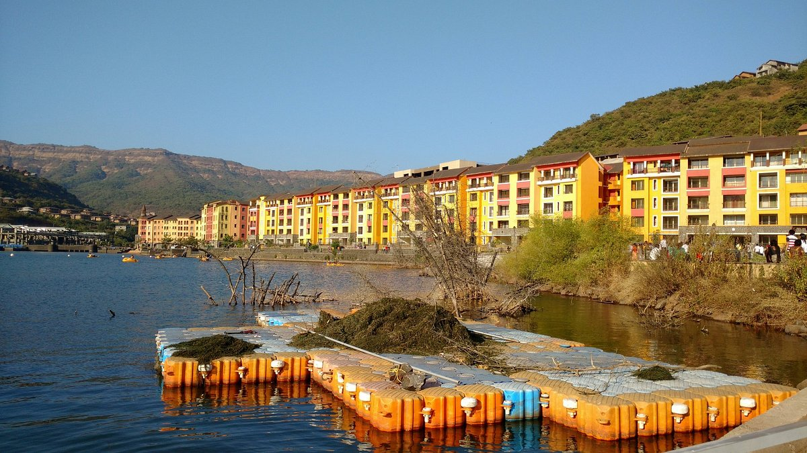
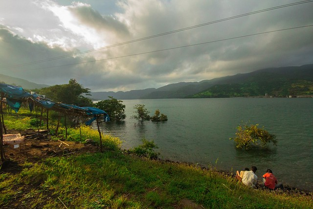

❮
❯
Lavasa is India’s first planned hill city, inspired by the Italian town of Portofino. Located in the Sahyadri Hills of Maharashtra, it is known for its picturesque waterfront, vibrant promenades, and adventure activities.
The best time to visit is from September to March.
- Monsoon (June - September): Lush greenery and mesmerizing foggy views.
- Winter (October - March): Best for outdoor activities and sightseeing.
Get ready for an unforgettable experience in Lavasa.